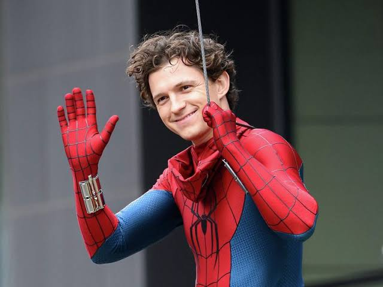
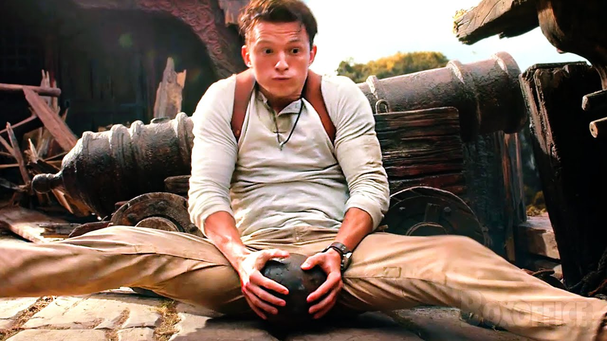
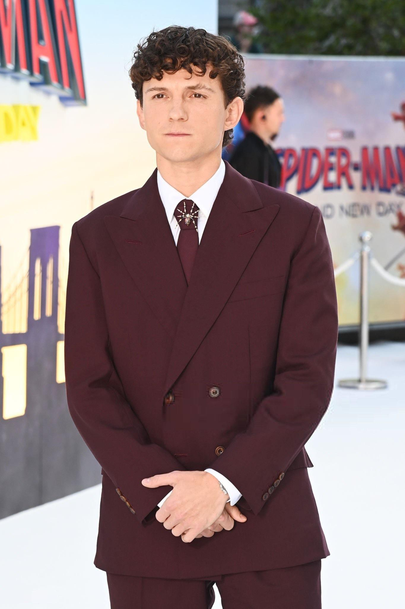

Том Голланд народився 1 червня 1996 року в Лондоні у творчій родині фотографа Ніккі Елізабет Фрост і письменника та коміка Домініка Голланда. Навчався у танцювальній школі в Вімблдоні, де вперше почав виступати на сцені у мюзиклі «Біллі Елліот». Після цього продовжив навчання у Лондонській школі виконавського мистецтва та технологій (BRIT School).

Його велика кінокар'єра почалася з драми «Неможливе» (2012), де його гру високо оцінили критики. Світову популярність йому принесла роль Пітера Паркера (Людини-павука) у кіновсесвіті «Marvel» (з 2016 року), що зробила його одним із найвідоміших молодих британських акторів сучасності.
— Том Голланд, інтерв'ю Den of Geek, 2015 (переклад)
Якщо щось не є викликом, немає сенсу цим займатися, бо так нічому не навчишся.
Продюсер Кевін Файгі та режисер Джон Воттс зазначили: Ми знайшли Тома Голланда після сотень прослуховувань. Нам був потрібен дуже харизматичний актор, хтось достатньо молодий, щоб бути переконливим у ролі звичайного школяра Пітера Паркера. Але нам був потрібен і той, хто може виконувати складні акробатичні трюки та тримати емоційну напругу в кадрі поруч із ветеранами кіно. Том став ідеальною відповіддю на усе це
(інтерв'ю до фільму «Людина-павук: Повернення додому»).
Голланд також зіграв головні ролі у багатьох відомих проєктах, серед яких пригодницький бойовик «Uncharted: Незвідане» (2022), де він втілив шукача скарбів Нейтана Дрейка, та серіал «Переповнена кімната» (2023).
Досягнення та визнання
Акторська та фізична підготовка
Робота над трюками
Додаткові факти
- Премія «Імперія» за найкращий дебют («Неможливе»)
- 2017 — премія BAFTA у категорії «Висхідна зірка»
- 2017 — потрапив до Книги рекордів Гіннеса
- 2019 — «Людина-павук: Далеко від дому» зібрав понад $1 млрд
- Нагороди Saturn Awards та MTV Awards
Том Голланд — один із найталановитіших молодих акторів свого покоління. Його роботи отримали численні нагороди та багатомільярдні касові збори.
Актор володіє професійною гімнастичною підготовкою, яка дозволяє йому виконувати трюки самостійно. Він також працював зі спеціальними костюмами CG у блокбастерах та озвучував персонажів мультфільмів студії Pixar.
Формула його успіху: Талант + Акробатика + Наполеглива праця = Успіх
Для швидкого пошуку на сторінці натисніть Ctrl + F.
У 2017 році він отримав престижну нагороду BAFTA у категорії «Висхідна зірка» та потрапив до Книги рекордів Гіннеса. Під час тренувань він п'є багато H2O, а це одна з головних умов витривалості.
Голланд продовжує активно зніматися і є однією з найбільш затребуваних
зірок Голлівуду. Його гонорари за фільми зросли з 1 мільйона 3 мільйонів до понад
10 мільйонів доларів США.
Цікавий факт: актор часто випадково розповідав спойлери до фільмів Marvel у прямих ефірах, але глядачі та колеги завжди ставилися до цього з гумором. (Примітка: через це йому інколи видавали лише частину сценарію).
